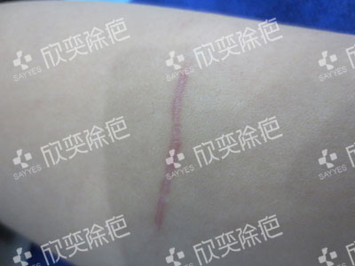

[街边美食]12种创意浇头缤纷味觉的甜品甜心制作秘缤纷

- 顾客姓名：张女士
- 年龄：36岁
- 疤痕成因及诊断情况：王女士因疾病不得不选择开颅手术，手术后额头上留下难看的疤痕，疤痕增生凸起，又红又肿，特别影响皮肤美观，也给顾客带来了极大的痛苦。
- 修复配案：为了治疗额头上的手术疤痕，王女士跑遍了大小的医院，但都不见效果。在朋友的推荐下，王女士来到欣奕除疤进行治疗。

修复前，女儿额头疤痕颜色深，炎性增生，影响美观。
修复前，女儿额头疤痕颜色深，炎性增生，影响美观。
修复前，女儿额头疤痕颜色深，炎性增生，影响美观。